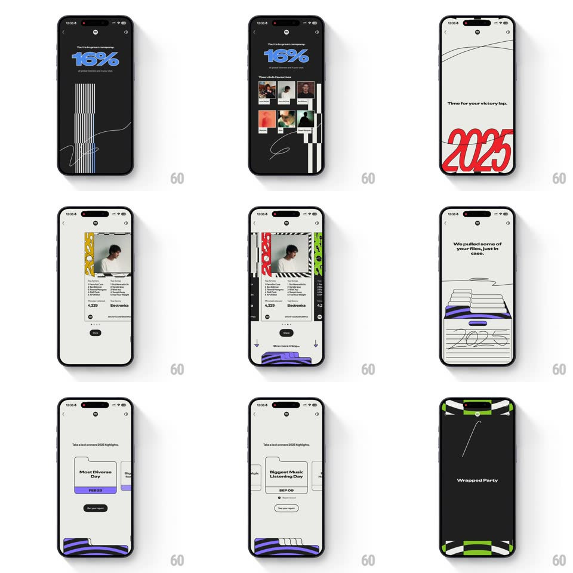

Media
Frame-by-frame

Rebuild this animation 1:1: Spotify Wrapped's highlights run - "You're in great company" club stats, the victory-lap title card, the springy highlight-card carousel, and the file-drawer scene, all cut on bold graphic patterns.

Rebuild this animation 1:1: Spotify Wrapped's highlights run - "You're in great company" club stats, the victory-lap title card, the springy highlight-card carousel, and the file-drawer scene, all cut on bold graphic patterns.
## Integration
Integration: stack-agnostic spec - springs given as stiffness/damping, timed motions as duration + curve; map every value to your framework and animation library of choice.
## Scene
A Wrapped story sequence: "You're in great company. 16%" with a grid of club-favorite artist thumbs on black; a cream wipe; "Time for your victory lap." over the giant red 2025; a recap card (portrait, top artists, top songs, minutes 4,229, top genre Electronica, Share button) sliding in a card carousel; "We pulled some of your files, just in case." with a sketch file drawer labeled 2025; "Take a look at more 2025 highlights" with small cards ("Most Nostalgic Day - JUN 21"); and a green/black warped-stripe interstitial.
## Motion spec
Pattern: high-energy story transitions - staggered text, spring carousel, graphic interstitials.
- Headlines stamp in word by word (80ms per word, slight 12px rise each) - never a whole-line fade.
- The club grid pops its thumbs in a scatter order (scale 0.8 -> 1, spring ~380/15, 50ms apart) under the 16% figure, which rolls up like a counter (600ms).
- Transitions between scenes are graphic: a warped-stripe pattern wipes across (diagonal slide, 400ms, ease-in-out) carrying the cut - the pattern is the transition.
- The highlight carousel springs sideways: the active card scales 0.92 -> 1 while neighbors peek at the edges; swiping throws the next card in with momentum (spring ~300/16).
- The file drawer scene: the drawer slides open (translateY, 350ms) and folders stagger up out of it (60ms apart) before the copy lands.
## Calibration
- Every scene carries one bold graphic system (stripes, dots, sketch lines) and one ink color - restraint in palette, excess in motion.
- The carousel's spring must overshoot visibly - soft snaps read as broken here.
## Reduced motion
Scenes crossfade (300ms); carousel scrolls without spring; grids fade in complete.
## Don't miss
- "Time for your victory lap." sets up the recap card - the card must feel like the lap, not a settings page.
- The 2025 drawer is a sketch, not a render - the hand-drawn lines keep it playful.